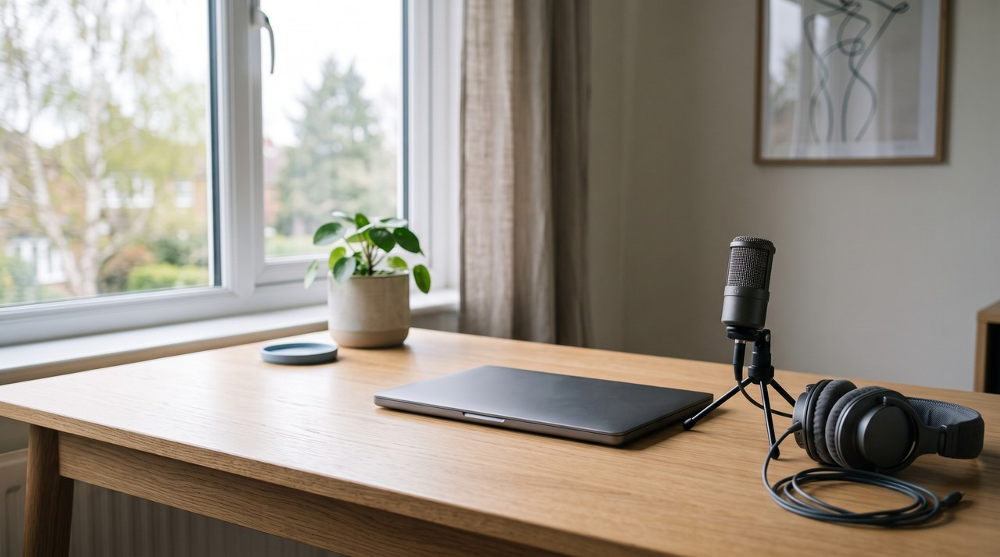
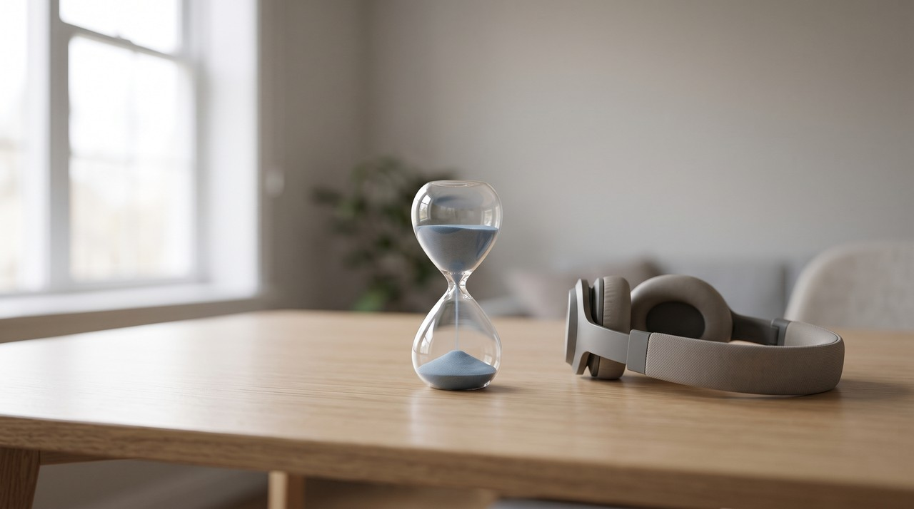
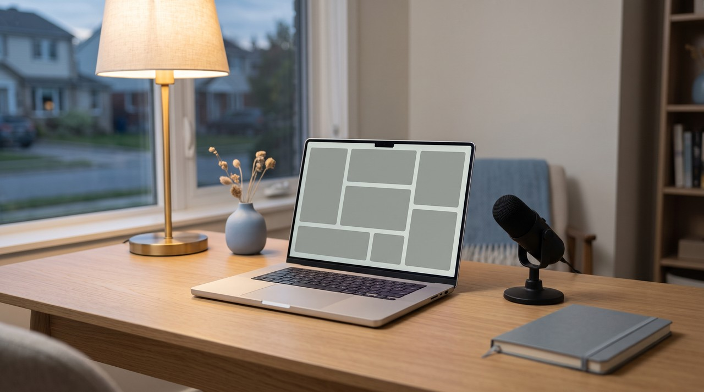

Speechify voice cloning: it is in Speechify Studio, not the reader app, and every second costs a credit

If you pay for the Speechify app that reads text aloud, you do not get voice cloning with it. Cloning is part of Speechify Studio, which is a separate subscription. On Speechify's own Studio pricing page, the free plan has no voice cloning, and cloning starts on Studio Starter at $100 a year with 86,400 credits. A voiceover uses 1 credit per second, so that is 24 hours of voiceover a year. VoiceClone clones your voice on your own PC for a one time $49.
| Question | Speechify reader (Premium) | Speechify Studio Free | Speechify Studio Starter | Speechify Studio Creator | VoiceClone |
|---|---|---|---|---|---|
| Price | $29 a month | $0 | $100 a year | $300 a year | One voice free, then $49 one time |
| Clone your own voice | Not listed | No | Yes | Yes | Yes |
| Credits | Not a Studio plan | 600 | 86,400 | 345,600 | No credits, no limit after the license |
| Voiceover time at 1 credit per second | Not a Studio plan | 10 minutes | 24 hours a year | 96 hours a year | No limit after the license |
| Commercial use | Not a Studio plan | No | Yes | Yes | Yes, for your own voice |
| Where it runs | Speechify's apps and servers | Speechify's servers, in the browser | Speechify's servers, in the browser | Speechify's servers, in the browser | Your own Windows PC, offline |
Written by Inam. I built VoiceClone, so please read this comparison knowing I am not neutral. My other engineering notes are on designesh.com. Last updated 30 September 2026.
A lot of people know Speechify as the app that reads PDFs, articles and books out loud. So when they want a voiceover in their own voice, the first idea is to open the Speechify app they already pay for and look for a clone button. It is not there, and the reason is simple once you see how Speechify is split up.
Speechify sells two different products. The reader app is one subscription, and Speechify Studio, where the voiceovers and the cloning live, is another. The Studio pricing page says this in its own FAQ: Studio and the Text to Speech Reader are two different subscriptions.
If you pay for the Speechify reader, you still do not have voice cloning. You need a Studio plan, and the free Studio plan does not include it.
What does the Speechify reader give you, and what does it not?
The reader is the app most people mean when they say Speechify. On Speechify's reader pricing page, the Premium plan is $29 a month and it lists 1000+ natural voices, 60+ languages, listening at 5x faster speeds, scanning printed pages, and AI summaries and chats.
That is a good app if you want to listen to your reading. But its job is reading text to you in Speechify's voices. Voice cloning is not on that plan's list, and the page points you to Speechify Studio as a separate product.
How does voice cloning work in Speechify Studio?
Studio is the part of Speechify built for making voiceovers, dubbing videos and similar work. It has three plans on its pricing page. The Free plan gives you 600 Studio credits and access to 1,000+ voices, but it says "No Voice Cloning" and "No commercial usage rights" in plain words.
Cloning starts on Studio Starter, which is $100 a year with 86,400 Studio credits, voice cloning and commercial usage rights. Studio Creator is $300 a year with 345,600 credits and everything from Starter. So for one person who only wants their own voice, Starter is the plan that matters.

What is a Studio credit, and how long does it last?
A credit is Speechify's own unit for measuring use, a bit like minutes on a phone plan. The Studio FAQ says a voiceover costs 1 credit per second, dubbing costs 3 credits per second and an avatar costs 30 credits per second. The same FAQ says cloning uses credits too.
Once you turn the credits into time, the plans are easier to read. The 600 credits on the free plan are 10 minutes of voiceover. The 86,400 credits on Starter are 24 hours of voiceover a year, and the 345,600 credits on Creator are 96 hours a year.
What counts as a new generation?
This part is easy to miss, and it is where credits go faster than people expect. The FAQ says any new speech generation costs credits, even the same voice reading a new script. Changing the pitch, the speed or the emotion also sends the line back through the AI, so that costs credits again.
Some things are free. A volume change is treated as a simple gain adjustment and costs nothing, and exporting the same audio again after it is generated is free. So if you like to try a line three or four ways before you keep one, each of those tries comes out of your balance.
Why do cloud voice tools charge by the second?
A little background explains this. When you press generate on a cloud tool, the voice is made on the company's servers, with their graphics cards, and they pay for that computing power every single time. So they pass it on to you as credits, characters or minutes, and a clone of your voice is stored on their side as part of your account.
That has one more effect people only notice later. Your cloned voice exists as a feature of your subscription, so it works while the plan is active. I wrote about what happens when that goes wrong in the PlayHT article, where users lost access to voices they had made.
How does VoiceClone do it on your own PC?
VoiceClone is a Windows app for Windows 10 and 11, built on the open source GPT-SoVITS engine, so you get that engine without Python or terminal commands. You talk normally into the microphone for 1 to 3 minutes. The app looks at that recording for noise, clipping and volume before it builds the clone, and after that anything you type is read out in your own voice.
Because everything runs on your own computer, there is no credit meter. For each line, the app makes several takes, a speech recognizer grades them word by word, and it hands you the best one. If one word comes out wrong, you redo only that word and keep the rest of the line, and none of that costs anything extra.

If the quick clone is close but not quite you, press Make it perfect and the app trains a proper copy of your voice. With a normal NVIDIA graphics card that is under an hour, and on a PC with no graphics card it still finishes, it just takes longer. Setup needs one download of about 1.3 GB, and from then on nothing leaves your computer, even when the internet is off.
You can try it without paying. The free version clones one voice, trains it fully, and gives you 3 generations so you can judge how it sounds. If it earns its place, the $49 one time license removes the script length limit and adds the word editor, retraining and exports, and nothing renews after that.
Where is Speechify still the better choice?
I want to be fair here, because Speechify does several things VoiceClone does not.
- Studio lists 1,000+ voices, and VoiceClone has only your voice plus the 4 trained voices in the license. If you need many different voices, Speechify wins.
- Studio has a Dubbing Studio for turning your content into other languages. VoiceClone speaks English only.
- Studio runs in the browser, so it works on a Mac or any computer. VoiceClone is a Windows app.
- Studio Starter includes stock music, video, images and sound effects, so it is more of a full video kit. VoiceClone only makes your voice.
- At $100 a year, Studio Starter is a low price for a year of cloning. The catch is that you pay it every year, and the hours are counted.
If you need many voices, other languages or a Mac, Speechify Studio is the better pick. If you only want your own voice, with no credits counting down, VoiceClone does it on your PC for $49 once.
FAQ
Does Speechify have voice cloning?
Yes, but only in Speechify Studio, on the Starter and Creator plans. The Studio Free plan says no voice cloning, and the Speechify reader app is a separate subscription.
How much does Speechify voice cloning cost?
The lowest Studio plan with cloning is Studio Starter at $100 a year, with 86,400 credits. A voiceover uses 1 credit per second, so that is 24 hours of voiceover a year.
Is Speechify voice cloning free?
No. The Studio Free plan gives you 600 credits and stock voices, but no voice cloning and no commercial rights. VoiceClone lets you clone and fully train one voice for free, then generate 3 times to hear it.
Is there a Speechify alternative that works offline?
VoiceClone runs on Windows 10 and 11 and works fully offline after a one time setup download of about 1.3 GB. Your recording and your cloned voice stay on your own computer.
Sources: Speechify Studio's pricing page with its credits FAQ, and Speechify's reader pricing page, both read on 30 September 2026, and the VoiceClone product page on myvoiceclones.com.
Hear your own voice come back.
The free Windows app clones and fully trains one voice, yours, on your own PC. No account, no upload, and the download starts right away.